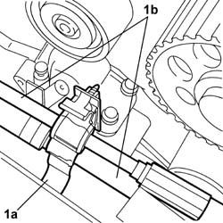
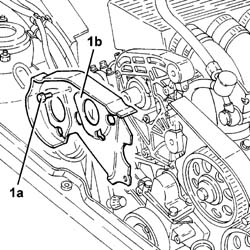
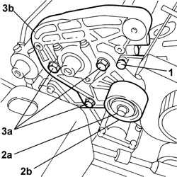
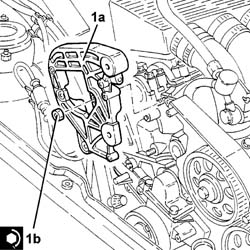

1008C14 BRACKET ON ENGINE FOR REACTION ROD
- Path
- Procedures > 10 ENGINE > 1008 POWER UNIT SUPPORTS > 1008C power unit reaction elements > 1008C14 BRACKET ON ENGINE FOR REACTION ROD
- Kind
- repair procedure (removal / refitting; the operation number is the code)
- Applies to
- engines: 2.0 TB, 2.4 20V, 3.0 V6, 3.2 V6; all production periods
- Interactive page
- https://sloeber94.github.io/elrnDB-lThss/en/#/183593
Applies to: engines: 3.0 V6, 3.2 V6; all production periods
 Removing
Removing
 Refitting
Refitting- Position the vehicle on a lift.
- Open the boot, remove the cover on the left hand side and disconnect the negative battery lead.
See in Op. 4450B04 Right FRONT WHEEL (one) - R.R.
- Raise the vehicle on the lift.
See in Op. 7055B54 PROTECTION/GUARD under engine - R.R.
See in Op. 7055B64 Engine compartment DUST SEAL in front wheel arch (one), left or right - R.R.
See in Op. 7055B42 FRONT WHEEL ARCH LINER (one), left or right - R.R.
See in Op. 7040D50 ENGINE COMPARTMENT UPPER SOUND INSULATION SHIELD - R.R.
See in Op. 1092G10 Engine components single drive BELT - R.R.
See in Op. 1036B10 CAMSHAFT in cylinder head - R.R. on vehicle
1. Release the power assisted steering pipes (1b) from the retaining band (1a).

Applies to: engines: 3.0 V6, 3.2 V6; all production periods
See in Op. 1032B58 DRIVEN TOOTHED PULLIES
1. Undo the fixing bolts (1a) and remove the timing belt right rear guard (1b).

Applies to: engines: 3.0 V6, 3.2 V6; all production periods
1. Undo the bolt fixing the timing belt left rear guard to the reaction rod bracket on the engine.
2. Undo the fixing bolt (2a) and remove the fixed belt tensioner (2b).
3. Undo the three fixing nuts (3a) and remove the reaction rod plate on the engine (3b).

Applies to: engines: 3.0 V6, 3.2 V6; all production periods
Refitting
Removing1. Fit the reaction rod bracket (1a) on the engine and secure it by tightening the nuts (1b) to the recommended torque.
 | Value - daNm | Fastening | Component | Ø |
|---|---|---|---|---|
4.8 | Nut | REACTION LINK BRACKET ON ENGINE | M10 |

Applies to: engines: 3.0 V6, 3.2 V6; all production periods
- Position the belt tensioner and tighten the fixing bolt to the recommended torque.
| Value - daNm | Fastening | Component | Ø |
|---|---|---|---|---|
. | 2.5 | Bolt | FIXED TENSIONER | M8 |
- Tighten the bolt fixing the timing belt left rear guard to the reaction rod bracket on the engine.
- Fit the timing belt right rear guard and secure it using the bolts.
| Value - daNm | Fastening | Component | Ø |
|---|---|---|---|---|
. | 0.9 | Bolt | TIMING BELT PROTECTIVE COVER(S) | M6 |
See in Op. 1032B58 DRIVEN TOOTHED PULLIES
- Secure the power assisted steering pipes to the retaining band.
See in Op. 1032B10 TOOTHED timing BELT - R.R. for timing adjustment or replacement
See in Op. 1092G10 Engine components single drive BELT - R.R.
See in Op. 7040D50 ENGINE COMPARTMENT UPPER SOUND INSULATION SHIELD - R.R.
See in Op. 7055B42 FRONT WHEEL ARCH LINER (one), left or right - R.R.
See in Op. 7055B64 Engine compartment DUST SEAL in front wheel arch (one), left or right - R.R.
See in Op. 7055B54 PROTECTION/GUARD under engine - R.R.
- Lower the vehicle.
See in Op. 4450B04 Right FRONT WHEEL (one) - R.R.
- Connect the negative battery terminal and position the cover on the left hand side of the luggage compartment.
- Remove the vehicle from the lift.
Applies to: engines: 2.0 TB, 2.4 20V; all production periods
- Operation not available
Topics linked from this page (9)
- 1032B10 TOOTHED timing BELT - R.R. for timing adjustment or replacement
- 1032B58 DRIVEN TOOTHED PULLIES
- 1036B10 CAMSHAFT in cylinder head - R.R. on vehicle
- 1092G10 Engine components single drive BELT - R.R.
- 4450B04 Right FRONT WHEEL (one) - R.R.
- 7040D50 ENGINE COMPARTMENT UPPER SOUND INSULATION SHIELD - R.R.
- 7055B42 FRONT WHEEL ARCH LINER (one), left or right - R.R.
- 7055B54 PROTECTION/GUARD under engine - R.R.
- 7055B64 Engine compartment DUST SEAL in front wheel arch (one), left or right - R.R.